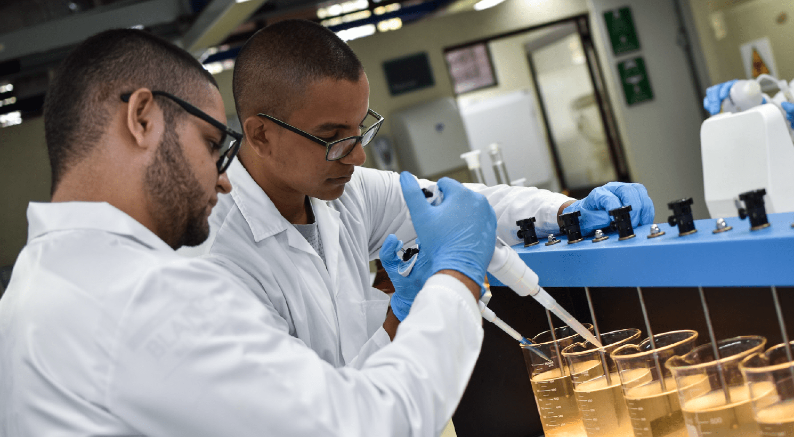

Visor de dispositivos de laboratorio en RA

En el marco del programa de Ingeniería Biomédica en la Universidad Autónoma de Occidente - UAO, los estudiantes se enfrentan al desafío de utilizar dispositivos de laboratorio de manera adecuada. Para abordar este problema, el curso ASM ha desarrollado modelos 3D que se encuentran integrados en esta página web informativa, que ofrece tutoriales precisos sobre el uso correcto de los dispositivos, además cuenta con la herramienta de realidad aumentada que permite a los usuarios visualizar modelos 3D realistas de estos dispositivos en sus teléfonos inteligentes.